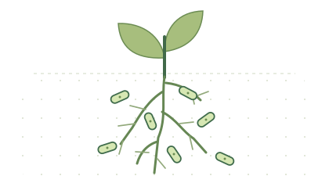

Experimental scope
Records link identifiable protein-coding loci to genetic-perturbation experiments in roots, the rhizosphere or the endosphere. Each observation retains its assay, host and condition where available.
DATABASE OVERVIEW
Experimental evidence for bacterial root colonization-associated genes
A curated collection linking genetic-perturbation evidence to 14,505 full-length bacterial proteins from 21 studies. Records include experimental labels, native-strain identifiers and references to the original source observations.
1,036 positives · 13,469 screened small-effect controls

Schematic of bacteria associated with plant roots.
Source locator · experimental context · sequence identity
01 / DATABASE SEARCH
Search protein identifiers or loci, and filter records by study, strain and experimental label. Record details provide sequence information and the associated experimental evidence.
| Native locus / protein ID | Experimental label | Strain | Source study | Length | Evidence |
|---|---|---|---|---|---|
| Preparing records… | |||||
Labels describe recorded experimental conditions. They are not model predictions.
Positive / 1Qualified genetic-perturbation evidence for a colonization deficit under the recorded conditions.
Control / 0Measured, QC-qualified small-effect non-hit. See the evidence details for conditions and limitations.
Experimental contextGrowth effects, assay design and evidence limitations remain visible alongside each observation.
02 / EVIDENCE DEFINITIONS
Labels are defined by the source experiments and retained with host, strain, assay and condition metadata where available. Qualification criteria and source limitations are documented separately.
Records link identifiable protein-coding loci to genetic-perturbation experiments in roots, the rhizosphere or the endosphere. Each observation retains its assay, host and condition where available.
Positive records follow reviewed source-specific perturbation evidence for a colonization deficit. Controls are tested, quality-qualified small-effect non-hits. Study-level rules and growth-control limitations remain visible in the evidence details.
Gene and locus identifiers connect to complete native-strain proteins. Sequence hashes, mapping records and homology-group identifiers support identity checks and reproducible data use.
03 / DATA DOWNLOAD
The complete release and individual data tables are provided below. Exports retain the protein identifiers, experimental labels, source references and sequence hashes included in this resource.
Protein FASTA, labels, source observations, native-strain mapping, curation audits and the separate H3 transfer cohort.
Download the full data package ↓All 14,505 complete proteins with binary experimental labels, native loci, study memberships and homology groups.
The 21 contributing studies, their source references, positive-label definitions and recorded general-growth controls.
04 / ABOUT THE RESOURCE
BacRootFit provides database search and data downloads. To predict new protein sequences, run the pretrained model using the linked GitHub software.
Release v1.0.0 contains 14,505 labelled proteins, their experimental evidence, sequence mappings, homology-group assignments and fixed data partitions. Each protein may be linked to multiple source observations.
Control selection uses source-qualified finite effects within the recorded 0.8–1.2 point-effect band. This is an operational small-effect criterion rather than an equivalence test.
Aquitalea magnusonii H3 was measured on duckweed surfaces. The three-hour cohort contains 86 positives and 1,792 controls. It is distributed separately for phenotype-transfer evaluation and is excluded from the 14,505-protein training collection.
H3 original study ↗BacRootFit release: v1.0.0 (code, data and models).
Original curation contributions are CC BY 4.0; code is MIT. Upstream sequence terms continue to apply.
Download resource citation metadata ↓